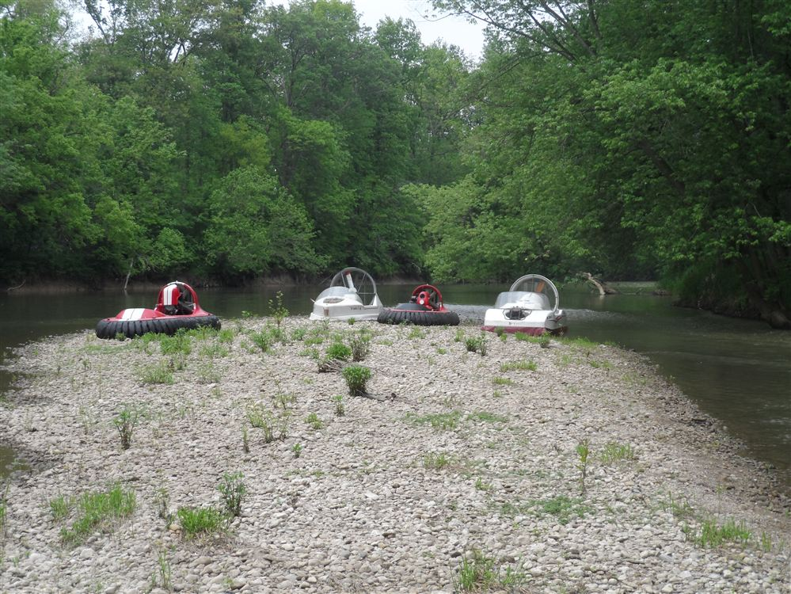
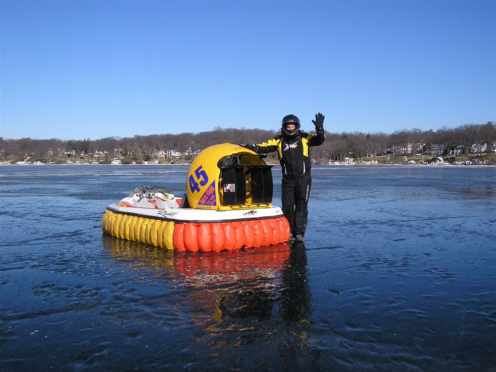
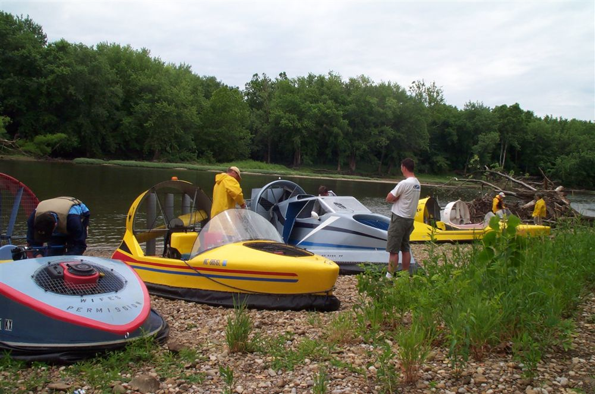
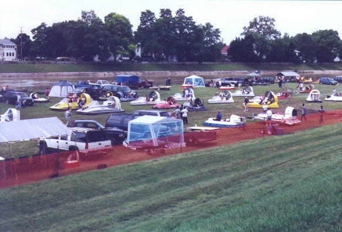
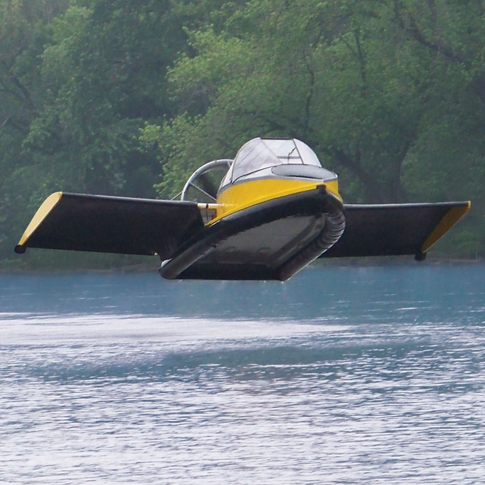
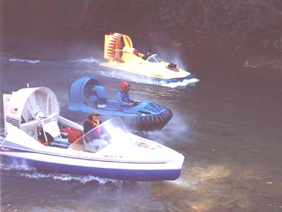
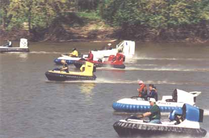
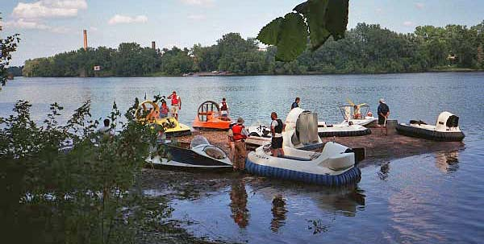
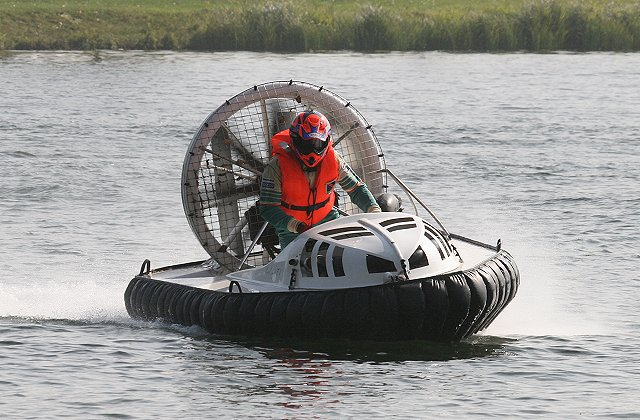
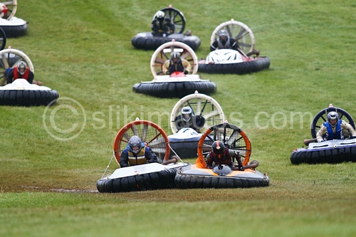

Welcome to the Hoverclub of America site
We are America's Leader in Recreational Hovercrafting. This site will help keep you connected with hovercrafters around the USA and the world. We are more than just a website and a newsletter - our members cruise our nations waterways. Our members race. Our members build fully functional hovercrafts. Our members give demonstrations to schools, and much more! We encourage you to join our club and experience all of the many opportunities to enjoy hovercrafting. Our website and is full of resources. Our forums allow members to communicate ideas and get assistance. Create your own photo pages, have a build diary or submit your favorite video for posting. Want to find a member near you? You can check out the membership directory to contact someone in your area. If you have any questions or concerns please Contact Us.
|  |  |
|  |  |
|  |  |
|  |  |
|  |  |
Hover News
- 10/18/14- Last Cruise of the year We have finished the last scheduled cruise for 2014 and want to thank all of the organizers and participants for another great year of hover cruising.
- 9/6/14 - Date set for the 2015 Florida Cruise - The cruise will still be at Loughmans Lake Lodge like last year, and will be held April 17-19, 2015.
- 6/24/14 - Hoverally Piqua 2014 - Will feature Australian Hovercraft Designer Owen Ellis, founder of Revtech Hovercraft, as guest speaker at the banquet. Owen will share his experiences with his Hovercraft companies through the years.
- 5/23/14 - Upcoming - Connecticut High School Hovercraft competition
- 5/6/14 - Upcoming - White River Cruise in Noblesville, Indiana
- 2/16/14 - Minnesota Hoverclub members James and Doug Kenison have gained some great notoriety with their Deer rescue on ice